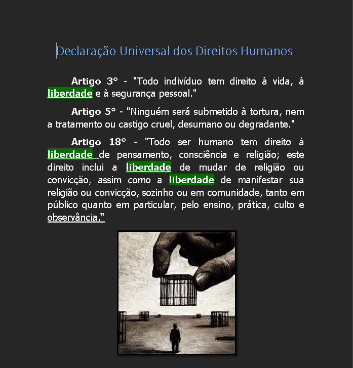
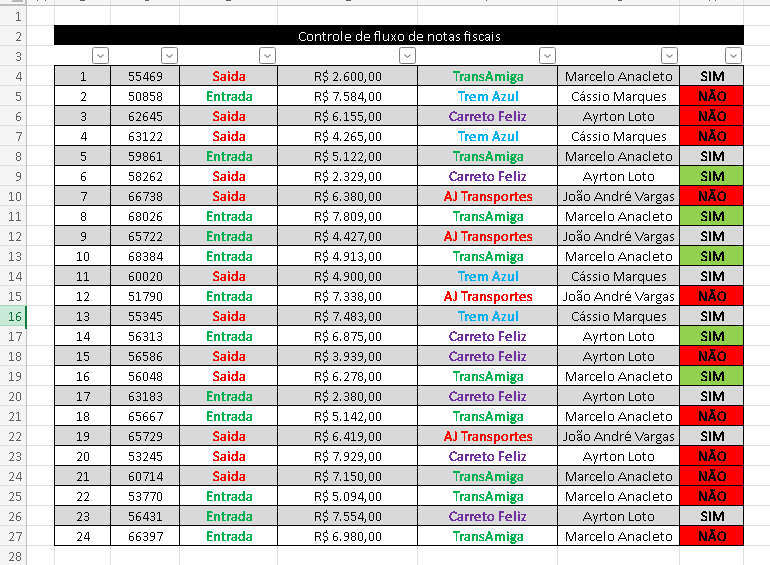

Fundamentos de Tecnologia da Informação
O que é o Hardware de computadores?
O hardware é a parte física do computador, ou seja, todos os componentes que podem ser tocados. Ele é responsável por processar, armazenar e transmitir informações. A placa-mãe é a principal placa do computador, conectando todos os componentes como processador, memória e dispositivos de armazenamento, permitindo que eles se comuniquem. O processador, ou CPU, funciona como o cérebro do computador, executando instruções e processando dados. Já a memória principal, ou RAM, é usada para armazenar temporariamente dados e programas enquanto o computador está ligado, permitindo que várias tarefas sejam realizadas ao mesmo tempo.
O que é um sistema operacional?
Um sistema operacional é um software que gerencia o hardware do computador e permite que os programas funcionem. Ele também fornece interfaces para o usuário interagir com a máquina e controlar os recursos do computador. Alguns exemplos de sistemas operacionais são: Windows, macOS, Linux e Android.
O que é o sistema de arquivos?
O sistema de arquivos organiza a forma como os dados são armazenados e acessados em dispositivos como HD, SSD ou pendrive. Ele define a estrutura de pastas, arquivos e permissões de acesso. Em modo texto, como no CMD, os arquivos podem ser manipulados usando comandos como dir para listar arquivos, cd para mudar de pasta e mkdir para criar pastas. Já em modo gráfico, como no Windows Explorer, os arquivos e pastas são mostrados de forma visual, permitindo arrastar, copiar, colar ou excluir arquivos usando o mouse.
O que é software de escritório?
Software de escritório é um programa usado para tarefas administrativas, acadêmicas ou profissionais, como criar textos, planilhas e apresentações. Alguns exemplos incluem Microsoft Word, usado para criar textos e relatórios; Microsoft Excel, utilizado para planilhas, gráficos e cálculos; e Microsoft PowerPoint, que serve para criar apresentações com slides e multimídia.

